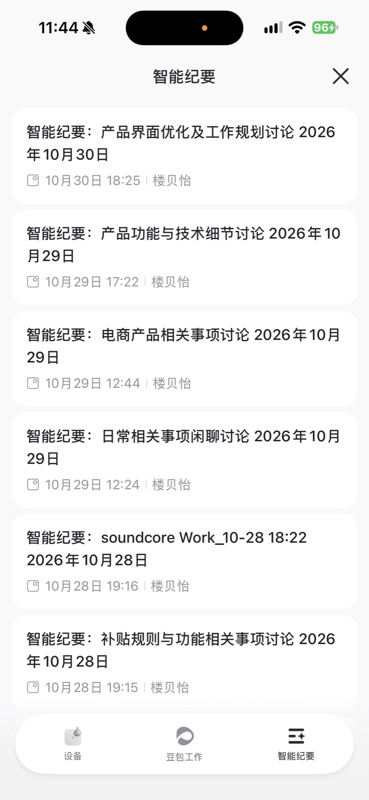
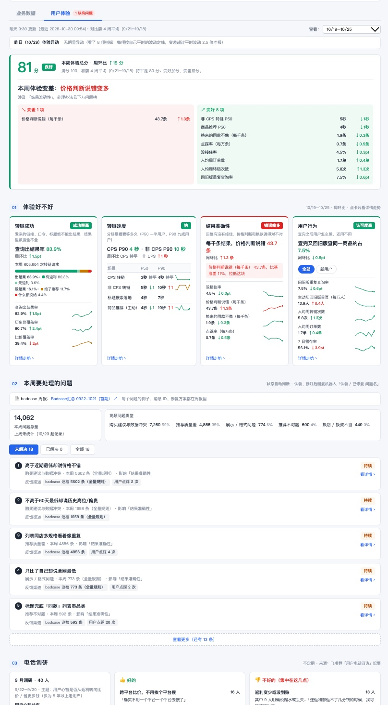
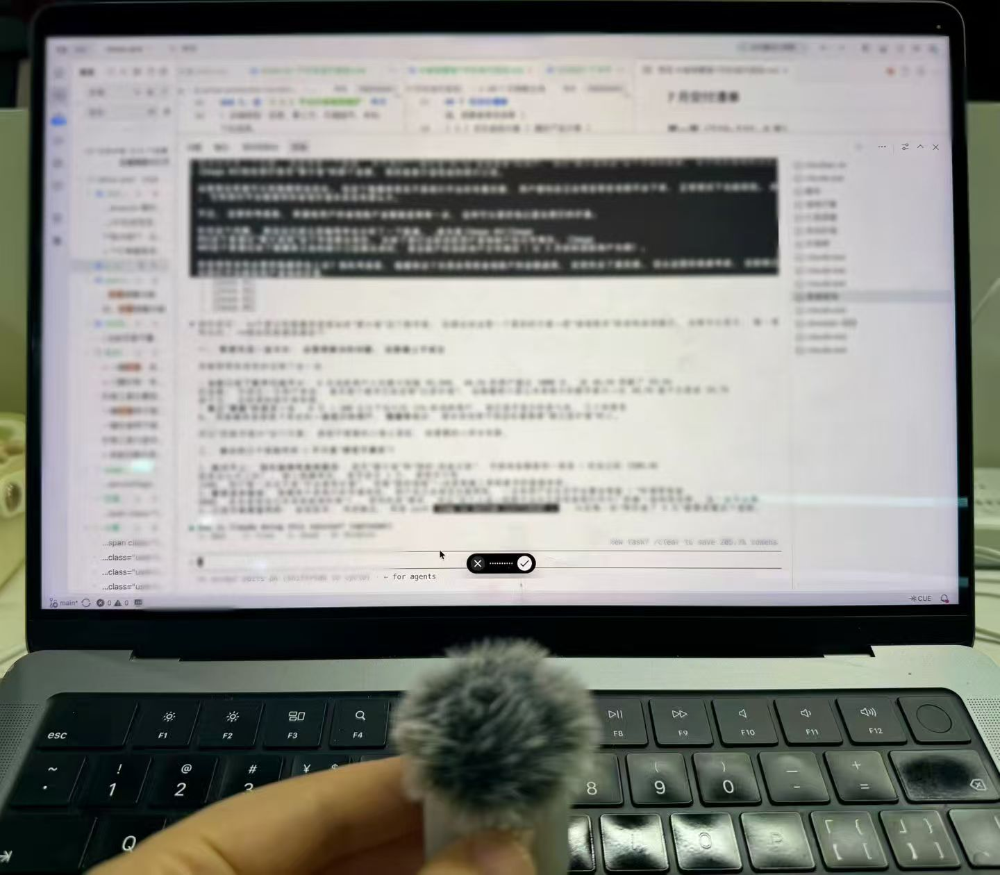
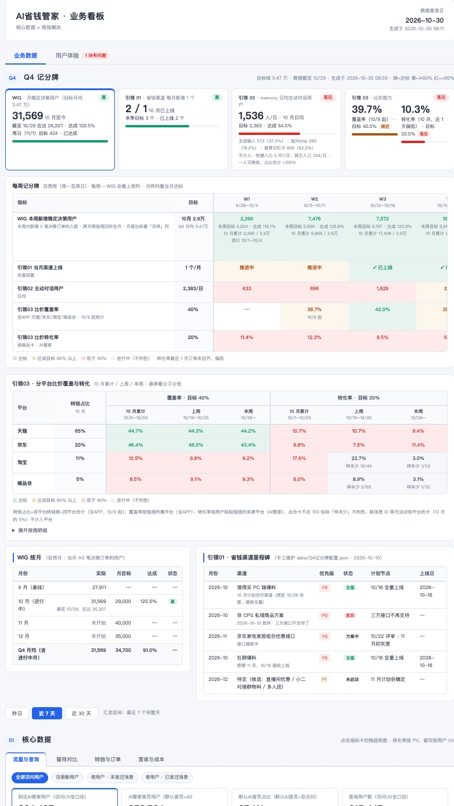
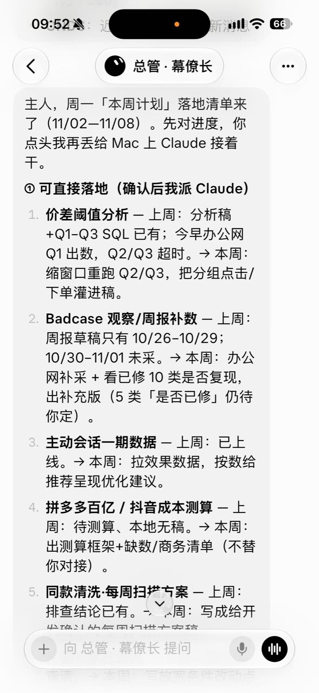
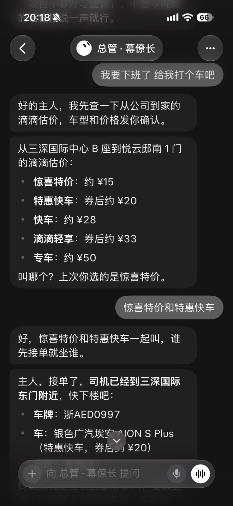
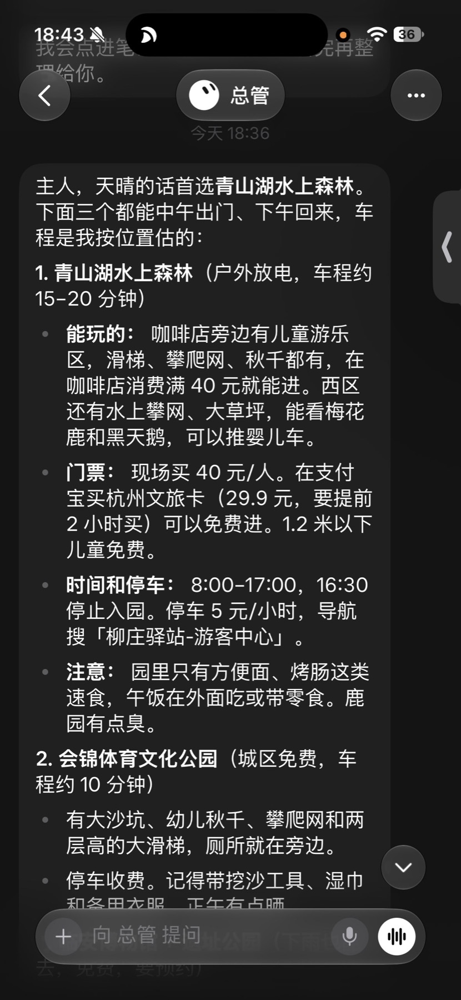
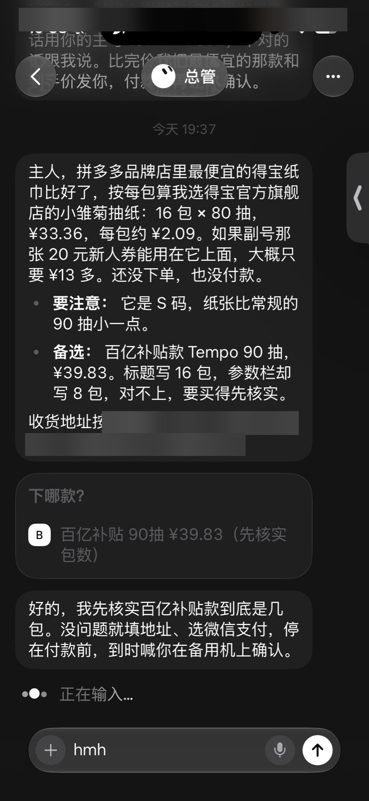

痛点
正式会议有飞书妙记；但工位旁、走廊里这类非正式讨论，来不及开妙记，事后只能靠回忆补。
解法
非正式讨论用安克录音豆，按一下就开录；录完自动出纪要，再交给 AI 整理成需求点。
内部分享
产品经理的日常 AI 工作流
楼贝怡·AI 产品经理·粉象生活
按 → / 空格 / 翻页笔 翻页
Part 1
让 AI 参与每个工作环节
再加三个提效习惯
一、需求收集 · 来源 1/3
正式会议有飞书妙记；但工位旁、走廊里这类非正式讨论，来不及开妙记，事后只能靠回忆补。
非正式讨论用安克录音豆，按一下就开录；录完自动出纪要，再交给 AI 整理成需求点。

images/02-feishu-transcript.jpg 一、需求收集 · 来源 2/3
用户问题散在数据监控、badcase、用户点踩、电话回访等多个渠道，不清楚用户到底遇到了哪些问题，也很难及时跟进。
把各渠道的反馈汇总到「用户体验」看板，问题一目了然；及时推进修复或优化迭代。

images/18-ux-dashboard.jpg 一、需求收集 · 来源 3/3
看动态：竞品多、信源散，要自己刷。
试产品：逐家逐场景试一遍，工作量很大。
看动态：Grok Bot 每天早上推给我，每条有要点和对我们的启发。
试产品：AI 在手机上逐家逐场景实测，自动出对比矩阵和启示。
images/05a-news-push.jpg 5 家竞品已装好
★ 亮点 · ✓ 能用 · ✗ 待改进（示意）
大方向都在把 AI 助手放到首页入口
各维度比价、领券普遍成熟；异常输入各家表现不一
对比表淘宝、京东、值得买、豆包、联盟 5 家 × 6 维度，截图逐条可查
启示① 追问和异常输入是机会点 ② 领券入口要更显眼
二、方案产出
描述需求时脑子里有想法，但打字慢、写出来零散，AI 容易理解跑偏。
直接口述，用语音输入法：

images/06-typeless.jpg 三、测试验收
没有测试人员介入时全靠产品验收，以前只能纯人工手搓测试，关键场景 case 繁多，根本测不全。
通过 Phone Use（iPhone）、安卓 ADB 等工具，让 Agent 直接控制手机做真机测试，测试结果自动整理输出到飞书文档，直接同步给开发。
彻底解放双手。
蒲公英 · 下载测试包
粉象生活 · 测试包
下载安装中…安装完成 ✓
登录
登录成功 ✓
执行测试 case
整理结果
正在写入飞书文档…
示意动画 · 循环播放
四、数据分析
想看一个数，要自己写 SQL 或等数据同学排期；每天早上还得手动翻好几张表。
让 AI 搭好业务数据看板，工作日每天早上自动刷新，数据早报直接推送给我。

images/03-dashboard.jpg 提效习惯 1
写 PRD、做验收、写周报……每次都要重新交代格式和步骤，结果还不稳定。
把流程封装成 Skill，一句话触发，按固定步骤跑完。
提效习惯 2
PRD、原型、数据分析、竞品分析……AI 每次交过来，都要我逐条检查、反复调整，非常耗精力。
按工作类型整理出我的规范和规则。AI 做完先按规则自查，再用脚本逐条检查，不过关就自己退回重写，通过了才交给我；我再改过的地方，自动沉淀回规则 —— 越用越省心。
提效习惯 3
以前离开电脑，AI 就没法干活。
用手机上的 Grok Bot 操控电脑、指挥 Claude 干活，人不在工位，活也在推进 —— 感觉时间都被延长了。
Part 2
Grok Bot 管生活
生活中我用 Grok Bot 最多，基本能把生活里的各类事项都管起来。
生活篇 · 1/5
事情一多就容易忘，待办东记一笔、西记一笔。
每天早上 Grok Bot 把工作、生活待办理好发我，到点再即时提醒。

images/13-daily-todo.jpg 生活篇 · 2/5
点杯咖啡、叫个车，要自己选门店、选规格、比车型，一层层点好几步。
接入了瑞幸咖啡和滴滴的 MCP，一句话说要什么，AI 帮我选好、下单，我只管最后确认付款。
images/14-luckin-order.jpg 
images/15-didi-ride.jpg 生活篇 · 3/5
自己翻小红书查心仪地点、查离我多远、查周边美食，一个周末的攻略要翻好久。
让它控制手机去查攻略、查位置、查餐厅，只把最终结论发给我，省下大量操作时间。

images/16-weekend-trip.jpg 生活篇 · 4/5
同一件东西要在几个 App 之间来回搜、对规格、比价格。
在拼多多上让 AI 直接控制手机比价下单，从账号注册到下单全程没有触发风控，最后我自己确认付款就行。

images/17-pdd-order.jpg images/17b-pdd-paid.jpg 生活篇 · 5/5
手机装了 200 多个 App，很多一个月没打开，自己一个个卸太费时间。
AI 按使用记录挑出久未打开的 App，我确认后它逐个「卸载App」，数据都保留。前后两轮一共卸了 87 个。
87 个 App · 空出约 16GB
抖音商城2.01 GB
扫描全能王1.01 GB
天猫581.9 MB
豆瓣495.9 MB
……
已卸载 0 / 87
87 个 App 卸载完成
两轮共空出约 16 GB · 数据都保留
最后一点感悟
用 AI 其实很简单——
把日常耗时的事，
交给 AI 替你解决。
最后一点感悟
别等想清楚再用，先用起来——
AI 用得越多，
你会发现自己像有了超能力。
楼贝怡·AI 产品经理·粉象生活